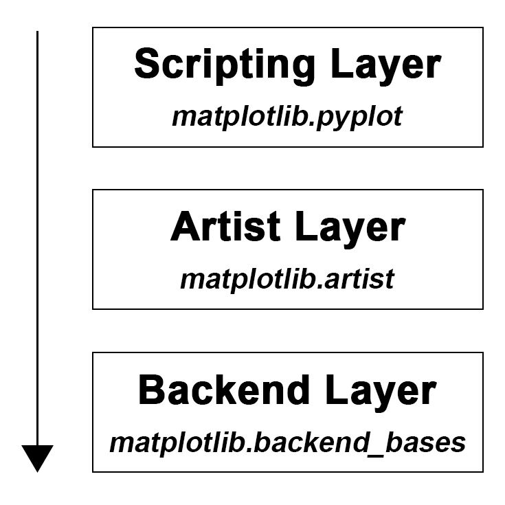
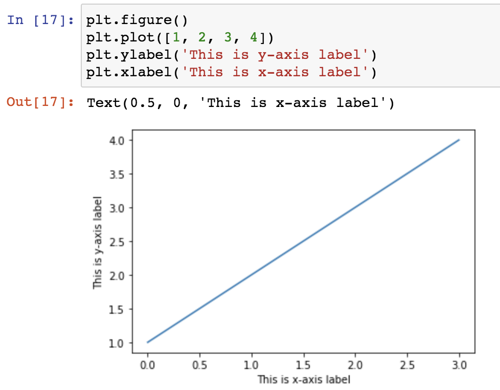
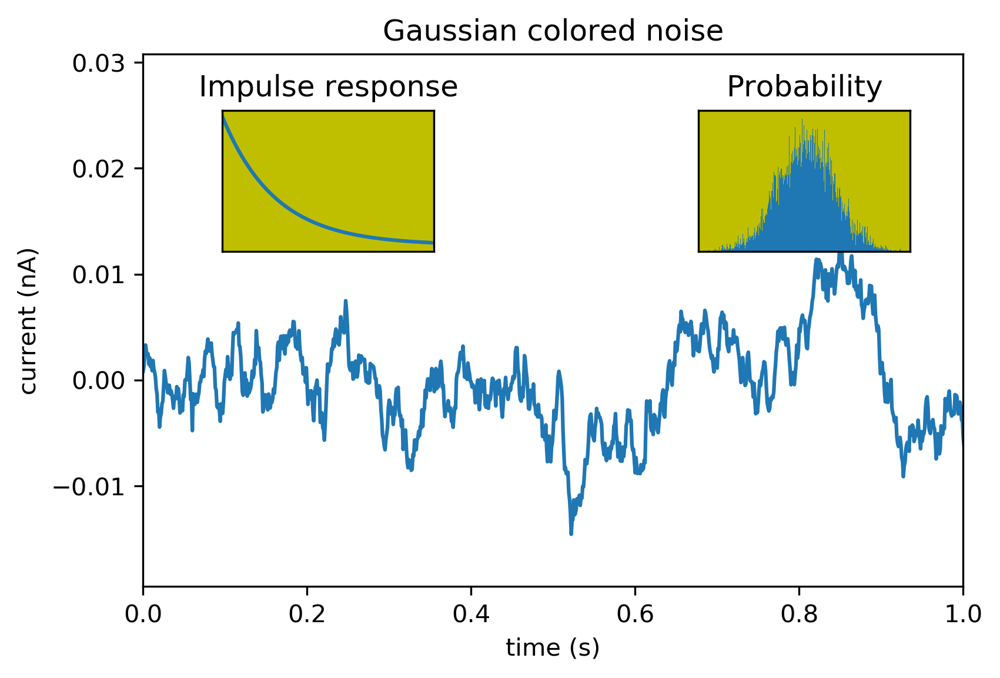

As a newbie converted recently from using R to Python, data visualisation via the standard Python visualisation library matplotlib is an inevitable part through the learning process. At the very beginning, after following several easy-to-find matplotlib tutorials, I had an impression that “en, it’s not as hard as I thought”. After import matplotlib.pyplot as plt, I can basically plot everything by calling plt.xxx(…) (e.g. plt.plot(…), plt.scatter(…), plt.bar(…), plt.xlabel(…), plt.ylabel(…), plt.legend(…), etc.). When it comes to some detailed adjustments, Stackoverflow is the place-to-go for answers. Very often, I just need to copy-paste the solution without even reading the issue description, which people call this as Stackoverflow Syndrome. However, as the plots getting complex, I found that there are always many different ways to solve a specific issue in matplotlib. For example, you may find that these functions, plt.title(…), ax.set_title(…), and ax.title.set_text(…), can all set title for a plot. I am so overwhelmed every time when this kind of situation happened. Isn’t plt.xxx() a one-size-fits-all method? where does ax.xxx() come from?
“plt.xxx(), or ax.xxx(), That Is The Question.”
I hence realised that copy-pasting solution is never going to make me master matplotlib. I need to know the architecture of matplotlib and how it plots. If you are a beginner of matplotlib and experienced similar situation just like me, this is the post for you. In this post, I will share my notes about:
- the difference between
plt.xxx() and ax.xxx() in matplotlib,
- in
matplotlib, figure is not only a figure and axes is not a plural word of axis ,
- plot an example figure using these two methods, respectively.
I hope this post can answer some your long-standing confusions and will save you time in learning matplotlib.
Difference between plt.xxx() and ax.xxx()
As shown in Figure 1, there are three main layers in matplotlib architecture. From top to bottom, they are Scripting layer (matplotlib.pyplot module), Artist layer (matplotlib.artist module), and Backend layer (matplotlib.backend_bases module), respectively. 
Let’s start from the bottom, the Backend layer handles all the heavy works via communicating to the toolkits like wxPython or drawing languages like PostScript in your machine. It is the most complex layer. Within this layer, FigureCanvas is the area onto which the figure is drawn and Renderer is the object which knows how to draw on the FigureCanvas. A regular user like you and me barely need to deal with this layer.
Then the middle layer, Artist layer, where ax.xxx() derives from. As the name implies, using this layer, you can control and fine-tune as many elements (e.g. spines, tick direction, tick label size, tick label font, tick colour etc.) as possible in the figure just like an artist paints on the canvas. This layer allows you to do more customisation compare to Scripting layer (see below) and more convenient for advanced plots. Especially when handling multiple figures/axes, you will not get confused as to which one is currently active since every subplot is assign to an ax. This is why ax.xxx() is sometimes referred to object-based plotting. We definitely will use this layer more often when writing a web application, or a UI application, or perhaps a script to be shared with other developers.
The top layer, Scripting layer, where plt.xxx() resident is designed to make matplotlib work like MATLAB script. In other words, this layer is considered as the lightest scripting interface among all three layers, which comprises a collection of command style functions for a quick and easy generation of graphics and plots. This is why many matplotlib tutorials prefer to introduce from this layer. It is the easiest part to start with and use, you basically add up objects (e.g. line, text, rectangle) on top of the figure. Scripting layer plotting is sometimes also called procedural plotting. 
A example plot with two methods
Alright, after clarifying the concepts of plt.xxx() and ax.xxx(), let’s use a simple example adapted from matplotlib document to demonstrate their differences when plotting figure with subplots.
Code of scripting layer plotting
import matplotlib.pyplot as plt
import numpy as np
# set up a seed to make the random result reproducible
np.random.seed(seed=666)
# create some data to use for the plot
dt = 0.001
t = np.arange(0.0, 10.0, dt)
r = np.exp(-t[:1000]/0.05) # impulse response
x = np.random.randn(len(t))
s = np.convolve(x, r)[:len(x)]*dt # colored noise
# the main axes is subplot(111) by default
plt.plot(t, s)
plt.axis([0, 1, 1.1*np.amin(s), 2*np.amax(s)])
plt.xlabel('time (s)')
plt.ylabel('current (nA)')
plt.title('Gaussian colored noise')
# this is an inset axes over the main axes
a = plt.axes([.65, .6, .2, .2], facecolor='y')
n, bins, patches = plt.hist(s, 400, density=1)
plt.title('Probability')
plt.xticks([])
plt.yticks([])
# this is another inset axes over the main axes
a = plt.axes([0.2, 0.6, .2, .2], facecolor='y')
plt.plot(t[:len(r)], r)
plt.title('Impulse response')
plt.xlim(0, 0.2)
plt.xticks([])
plt.yticks([])
plt.show()
Code of artist layer plotting
import matplotlib.pyplot as plt
import numpy as np
# set up a seed to make the random result reproducible
np.random.seed(seed=666)
# create some data to use for the plot
dt = 0.001
t = np.arange(0.0, 10.0, dt)
r = np.exp(-t[:1000]/0.05) # impulse response
x = np.random.randn(len(t))
s = np.convolve(x, r)[:len(x)]*dt # colored noise
# set up subplot axes
fig = plt.figure()
ax1 = fig.add_subplot(1, 1, 1)
ax2 = fig.add_axes([0.2, 0.6, .2, .2], facecolor='y')
ax3 = fig.add_axes([.65, .6, .2, .2], facecolor='y')
# the main axes
ax1.plot(t, s)
ax1.axis([0, 1, 1.1*np.amin(s), 2*np.amax(s)])
ax1.set_xlabel('time (s)')
ax1.set_ylabel('current (nA)')
ax1.set_title('Gaussian colored noise')
# this is another inset axes over the main axes
ax2.plot(t[:len(r)], r)
ax2.set_title('Impulse response')
ax2.set_xlim(0, 0.2)
ax2.set_xticks([])
ax2.set_yticks([])
# this is an inset axes over the main axes
n, bins, patches = ax3.hist(s, 400, density=1)
ax3.set_title('Probability')
ax3.set_xticks([])
ax3.set_yticks([])
fig.canvas.draw()
If everything goes right, you will get the following figure.  As you can see from these two scripts (Scripting layer plotting vs. Artist layer plotting), although the code of artist layer plotting is more verbose than that of scripting layer plotting, it is easier to read. This is a very important practice to let you produce quality code and increase the readability of your code. When the plots getting complicated, the power of artist layer plotting will become more and more apparent.
Taken together, we may use plt.xxx() to quickly get a plot for exploratory data analysis, however, ax.xxx() is a go-to style when your code is part of a serious project and need to be shared with others. In addition, as a learner of matplotlib, I strongly advise starting from artist layer plotting, from which you will have a more comprehensive understanding about matplotlib plotting and definitely benefit more for your long-term development in data visualisation.
As always, I welcome feedback, constructive criticism, and hearing about your data science projects. I can be reached on Linkedin, and now on my website as well.
 As we can see from Figure 3, the whole
As we can see from Figure 3, the whole